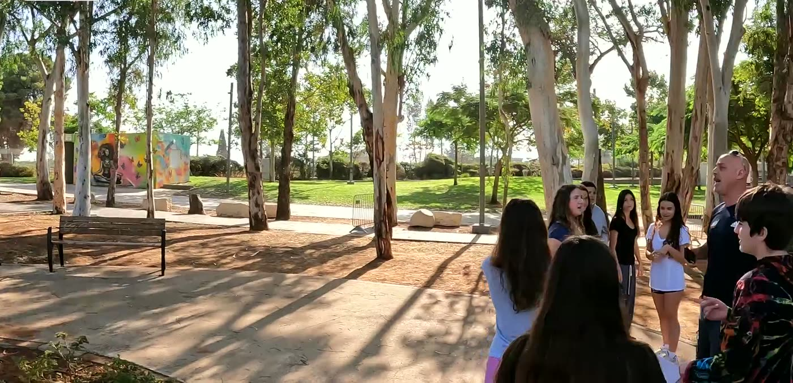
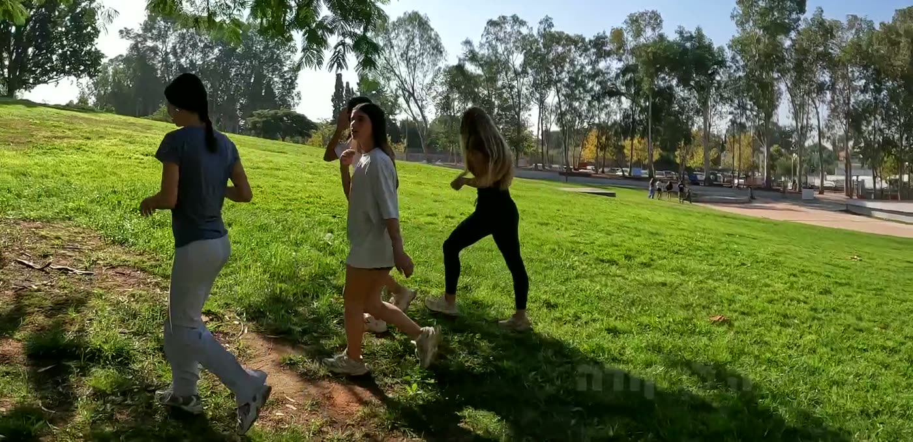
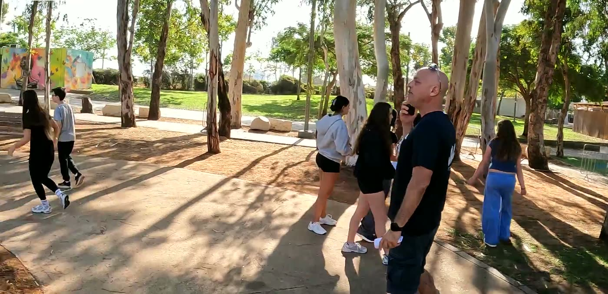
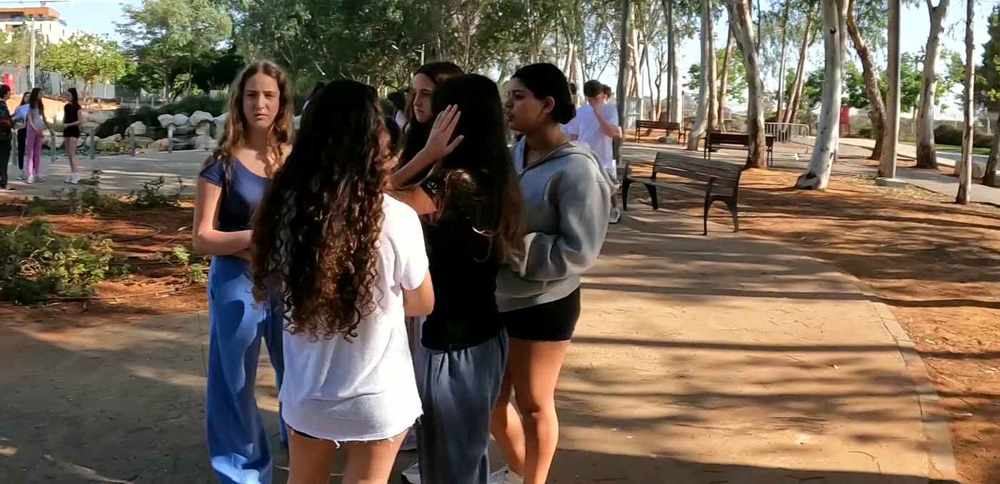
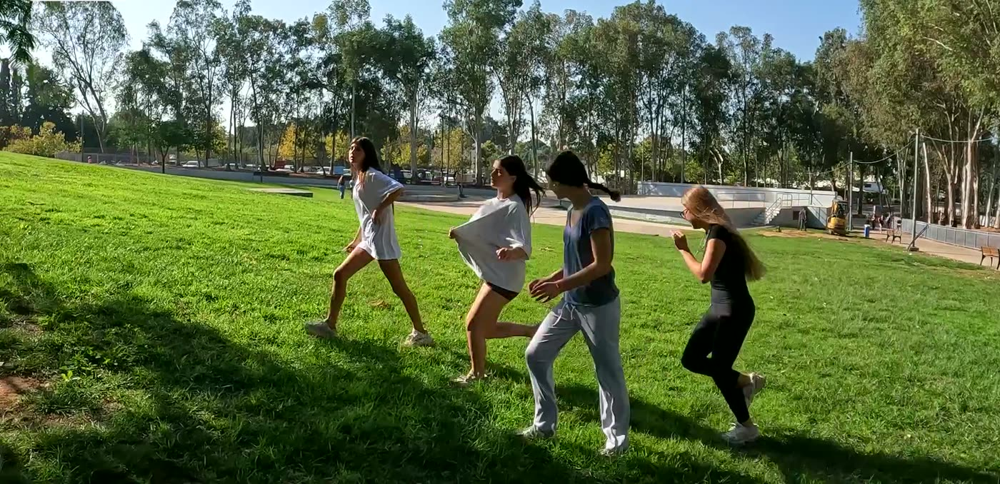

בתי ספר ← מירוץ ניווט
יום פעילות לכיתות ה׳–י״ב ←מפה ביד, צוות לצד, ויוצאים לדרך
מירוץ ניווט בפארק: התלמידים מתחלקים לקבוצות קטנות, מתכננים מסלול על המפה, מפענחים רמזים ומחפשים נקודות ציון. בכל נקודה מחכה קוד שמוכיח שהגעתם. הקבוצה רצה יחד, חושבת יחד, ומנצחת יחד.
- ה׳–י״בשכבות גיל
- רמז + קודבכל נקודת ציון מקבלים
- קבוצות קטנותעבודה בצוות
תלמידי חטיבת ביניים, ניווט בפארק
תלמידי חטיבת ביניים יצאו לפארק עם מפת תצלום אוויר. בכל נקודה חיכו להם רמז וקוד, ובדרך היו חיפושים, ויכוחים על המפה, ריצות על הדשא ומכשולים שעברו יחד.
- ניווט
- קריאת מפה
- פתרון רמזים
- עבודת צוות
- חוסן

יותר ממשחק בפארק
המסלול, הרמזים ורמת הקושי מותאמים לשכבת הגיל: מסלולים קצרים ורמזים פשוטים לצעירים, ומסלולים ארוכים וחידות מורכבות לבוגרים.

עבודת צוות
קבוצה אחת מההתחלה ועד הסוף: מחליטים יחד, רצים יחד ואף אחד לא נשאר מאחור.

התמצאות וקריאת מפה
מתרגמים את המפה לשטח, מתכננים סדר נקודות ומתקנים כשטועים.

חשיבה ופתרון בעיות
כל רמז הוא חידה קטנה שפותרים בשיחה, לא בכוח.

חוסן והתמדה
לא מוצאים? מחפשים שוב, בודקים את המפה וממשיכים.
מהתדריך ועד ״הגענו!״
המדריכים שלנו מכינים את המסלול, מפזרים את נקודות הציון ומלווים את הקבוצות לאורך כל המירוץ.
תדריך קצר ומפה ביד
כל קבוצה מקבלת מפה, כרטיסייה ורשימת רמזים, ושומעת את כללי המשחק.
כל נקודה: רמז וקוד
הרמז מוביל למקום, והקוד שעל המדבקה מוכיח שהגעתם.
מנקודה לנקודה
מחפשים, מוצאים, רושמים ורצים הלאה, כקבוצה אחת.
הגענו!
כל הקבוצות מתייצבות בנקודת הסיום, בודקים קודים ומכריזים על המנצחים.
מביאים את המירוץ לבית הספר שלכם?
ספרו לנו על הקבוצה, ונבנה יחד את התוכנית הנכונה. נחזור אליכם תוך יום עבודה.
- רולי חדש054-4221337
- רונן054-4225112
- מיילnewmaslul@gmail.com
- כתובתפנינה 8, גדרה